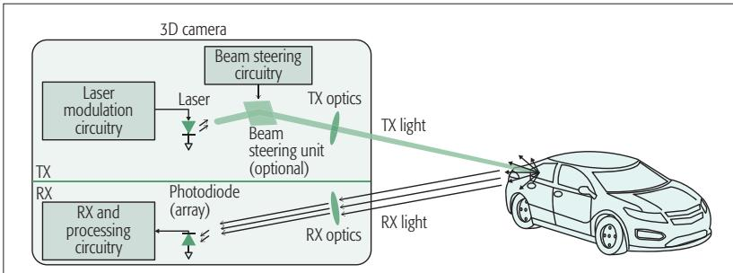
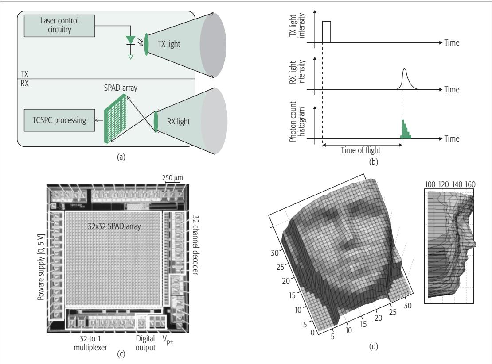
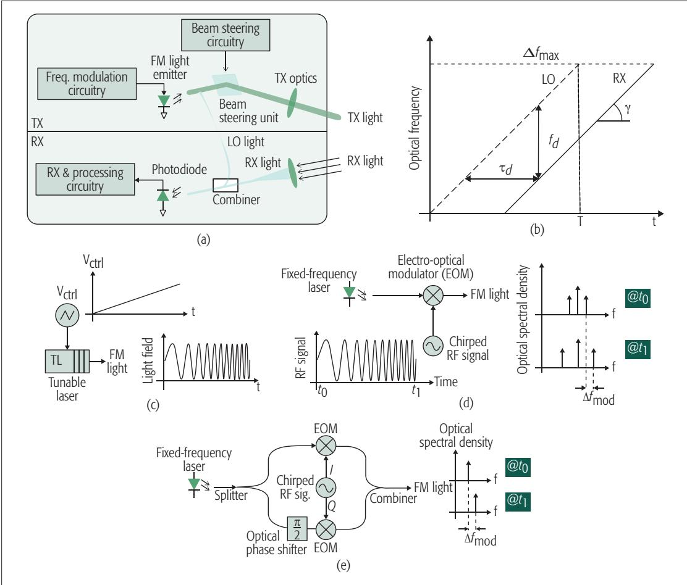
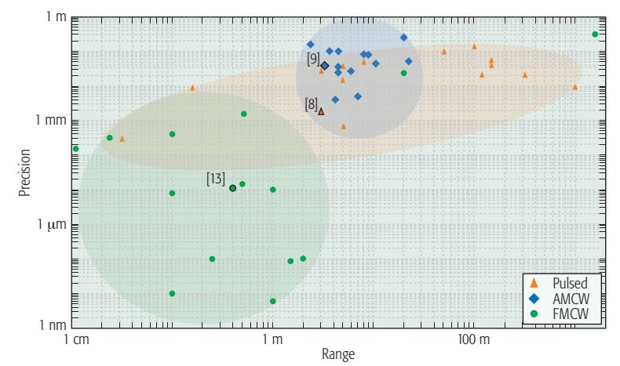
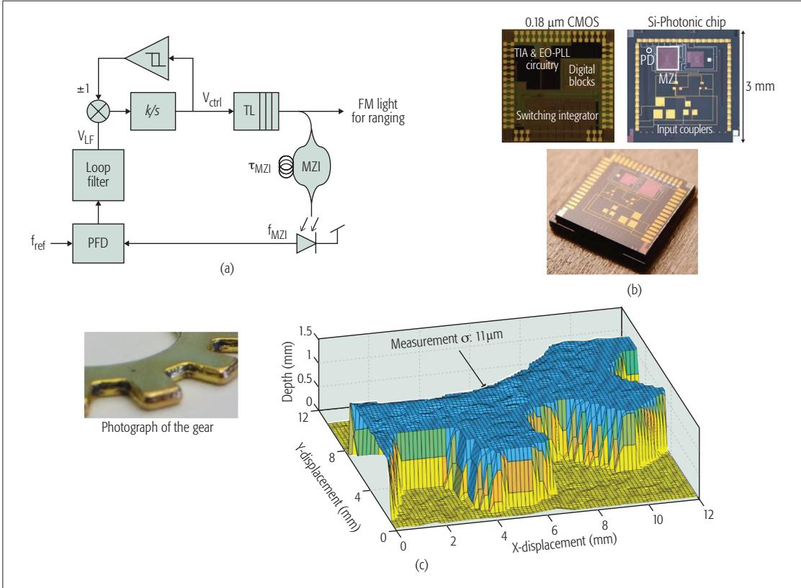

阶段 J · 基础零件 / Lesson 0195
LiDAR 硬件（2017）：点云是怎么从硬件里出来的
前八季我们把点云当输入用了几十次，但从没问过它到底是怎么被量出来的——这篇电路人写的论文只回答一件事：那一串三维坐标，在硬件里靠什么原理、花什么代价得到 📡
🎯 主题：激光雷达的测距原理与硬件架构（被 SLAM 当传感器的那个零件）
👥 作者：Behnam Behroozpour、Phillip A. M. Sandborn、Ming C. Wu、Bernhard E. Boser
📅 2017（据文件名；正文未标注发表处与年份） · Lidar System Architectures and Circuits
本节目标
读完你应该能：① 说清点云为什么「不是一张图」，而是一串各自独立的测距结果；② 用 $R = \frac{1}{2}c\tau$ 解释「测距的本质是测时间」，并说出要分辨 1 厘米需要多高的时间分辨率；③ 分清 Pulsed / AMCW / FMCW 三种调制方式各自靠什么信息算距离；④ 分清本篇真正的两条分类轴；⑤ 知道本篇没有 给出哪些数字（这是本课的硬纪律）。
和前面课程怎么接
第四季 0074 的 LOAM 之所以要拆成「先估速度、再逐点补偿畸变」两个算法，根源就在本课要讲的「测距＝测时间，所以每个点各自带一个时刻戳」。同季 0086 更进一步：它干脆不把点累积成帧，从根本上绕开这件事。另外，传感器之间的时刻对齐，第五季 0095 与 0096 讲的是同一件事的另一个层次。但请注意分工：本课只讲前两环（测距＝测时间 → 每个点时刻不同），运动畸变与去畸变属于第四季的课。
0. 点云不是一张图——它是一串测距结果
这篇论文的摘要里有一句话，是全课最好的开场。原文说：三维成像通常的做法是测量到物体上（或场景中）多个点的距离，再把这些测距结果做成一张点云 。请把这句话读两遍，因为它纠正了一个极常见的直觉错误。
点云的定义
点云 = 一大堆测距结果的集合。 它不是一张「每个像素都有值」的图像，而是「我朝这个方向打了一束光，它跑了个来回，用了这么久，所以那边有个东西，距离这么远」这样一条一条的测量记录 堆在一起。
为什么要强调这一点？因为相机和激光雷达的差别是根本性的：
相机 是「一瞬间整幅曝光」：一张图里所有像素共享同一个时刻 。你按一次快门，得到的是一个时间片。激光雷达 是「一个点一个点量出来的」：每个点都对应一次独立的「发射—等待—回波」事件，各自发生在不同的时刻 。
这带来一个直接的后果：整篇论文其实在回答的，是「怎么把『光跑了一个来回用了多久』这件事，变成『那边有个东西、离我多远』 」。作者是电路人，所以这篇论文不关心「有了点云之后怎么用」——它只关心那一串三维坐标在硬件里是怎么被量出来的、要花什么代价。
顺便说一个和 SLAM 关系很大的事实（它出自本季下一课要讲的综述，不是本篇）：在自动驾驶这种场景里，点云的分布极其不均匀 ——绝大多数点都挤在雷达附近，离得远的物体只能拿到寥寥几个点 。这就是「远距离配准不稳」的同一个根。

原图注（Fig. 1）： Basic lidar-based 3D camera architecture.（中译：基于激光雷达的三维相机的基本架构。）怎么看这张图： 这张图就是本课的总纲——把一台激光雷达拆成「发射机 （造光、调光）＋ 接收机 （收光、把光变成电信号、计时）」两大块，中间是那条打出去又回来的光路。整篇论文后面所有章节，其实都在往这两个方框里填细节：发射侧讲怎么调制光，接收侧讲怎么把微弱的回光从噪声里捞出来 。
1. 测距就是测时间：$R = \frac{1}{2}c\tau$
所有激光雷达测距的最底层公式只有一个：
这句话在说什么： $R$ 是到目标的距离，$c$ 是光在中间介质（比如空气）里的速度，$\tau$ 是回波的往返时延 （光从发射到回来的总时间）。光速乘上这个时间，是光走过的总路程；因为光走的是一个来回，所以再除以 2 ，才是单程距离。
它为什么这么算： 原文的说法是，基于激光雷达的测距「等价于测量光波到目标的往返时延」——测距离的本质就是测时间 。这句话是本课乃至第四季的地基。
这个式子的杀伤力在哪（由公式换算，不是原文数据）： 把 $c = 3\times 10^{8}$ 米每秒代进去，反解出「要分辨多小的距离，需要分辨多小的时间」：
要分辨 1 厘米，需要分辨出 $\tau$ 的 0.067 纳秒 （约 67 皮秒）。也就是说，计时电路的分辨率要到「一秒钟的一千亿分之一」这个量级，点云才准到厘米。反过来更直观：1 纳秒的时间误差，就是 15 厘米的距离误差。 一个「一亿分之一秒都没数准」的电路，会让整片点云鼓出来或者缩进去十几厘米。
所以这篇论文用了整整一节讲轴向精度，原因就在这里：激光雷达本质上是一台极高速的秒表。
精度和分辨率是两件事，别混
原文专门提醒了一句：精度不要和距离分辨率混为一谈 。两者的区别是：
精度 $\sigma_R$ ：对着一个固定的距离反复测很多次，这些读数的标准差有多小。它衡量「你把这个位置定得有多确定」，可以靠多次测量取平均来改善 。距离分辨率 $\delta R$ ：轴向挨得很近的两个目标，能不能被分开。这个靠平均改善不了 。
原文用「组织切片」打比方：发射光在组织不同层的界面上反射。分辨率好 ，意味着你能分辨出更薄的层；精度好 ，意味着你能把这些界面的位置定得更准。这个类比很直观，值得记住。
分辨率的上限由带宽决定：
这句话在说什么： 想分开挨得很近的两个目标，就得让信号「变化得更快」，也就是带宽 $B$ 更大。原文的推导链是：两个相隔 $\delta R$ 的目标，回波时间差是 $\delta t = 2\delta R/c$；带宽又与这个时间成反比，即 $B = c/(2\delta R)$，反解就得到上式。
它为什么重要： 原文给了一个量级对比，这几乎是「激光雷达为什么比毫米波雷达准」的量化答案——射频频段的带宽可以做到几十 GHz，对应厘米级分辨率；而光波的带宽可以大得多，能做到微米级 。
精度则同时取决于分辨率和信噪比：$\sigma_R^{2}\propto \dfrac{\delta R^{2}}{\mathrm{SNR}}$。人话： 想测得准有两条路——让信号变化更快（$\delta R$ 更小），或者让信噪比更高。注意这是方差 正比，所以信噪比翻四倍，标准差才减半。与 SLAM 的连接： 回波功率随距离平方衰减，远处的信噪比掉下去，$\sigma_R$ 就涨上来——这就是「远距离点噪声大」的公式版答案。
远处的一面砖墙
一边转，一边往外发
发射时刻 t₁
回波时刻 t₂
旋转式激光雷达
距离 R ＝ 光速 × 往返时延 ÷ 2
除以 2 是因为光走的是一个来回（τ 是双程时间）
要分辨这 1 厘米，需分辨出 0.067 纳秒
1 纳秒没数准 ＝ 15 厘米误差
这张图在画什么： 一台旋转式激光雷达向远处砖墙发一束激光，墙上打出一个亮斑，回波返回来；下方的刻度尺在说明这台仪器对计时的要求有多苛刻。怎么看这张图： ① 红色实线去、橙色实线回，它们不是同一时刻发生的两个动作，中间隔着 $\tau$；② 机体顶上那道绿色弧线表示它一直在转 ，一边转一边往外发；③ 底部的公式就是全部原理——测距离，就是测时间 ；④ 右侧那把尺子是本课最该记住的数字：1 厘米的距离分辨率，要求你把时间分辨到 0.067 纳秒 。要记住的一句话： 「0.067 纳秒」和「15 厘米」这两个换算，是由 $R=\frac{1}{2}c\tau$ 自己算出来的，原文只给了公式、没有给这两个数字 ——本课所有这类换算都会标明出处。
2. 三种调制方式：光被打上什么「花样」，就把什么花样量回来
既然测距就是测时间，那接下来的问题就是：怎么知道光「回来晚了多久」？ 原文的思路非常统一，值得先记住这句话：通过对发射光的强度、相位或频率做调制，再测量这个调制花样重新出现在接收端所需要的时间。
按「被打上什么花样」来分，主流方案有三种。原文明确点了这三类的名字：脉冲式（pulsed）、幅度调制连续波（AMCW）、频率调制连续波（FMCW） 。
① Pulsed（脉冲式）：发一个短脉冲，看它什么时候回来
这是最朴素的做法。原文的描述是：在最简单的情况下，朝目标发射一个短光脉冲，脉冲回波到达接收机的时刻 就标定了距离。
原文给了两个很实用的细节：
脉宽从不到 1 纳秒到几十纳秒。 「更短的脉宽更好」有两个理由 ：一是在保持平均功率低于眼安全限值 的前提下把峰值功率 做高（于是能打得更远）；二是由 $\delta R = c/(2B)$，短脉冲意味着大带宽，于是轴向分辨率更好 。
接收端的核心器件是 SPAD（单光子雪崩二极管） 。原文写得很细：它本质上是工作在「反向偏压略微超过击穿电压」状态的雪崩光电二极管；强电场把光子吸收或热涨落产生的电子-空穴对加速到能触发雪崩 ；此时外围电路必须把反向偏压降下来以终止这次雪崩、准备下一次探测；而这次雪崩发生的时刻由外围电路记录下来 ——那就是回波到达时刻。
但 SPAD 有个硬伤：恢复时间最长可达 100 纳秒，会限制测量速率 ；而且它对热噪声和落在可探测波长窗口内的环境光都会误触发。于是有了 TCSPC（时间相关单光子计数） ：不是「测一次」，而是把很多次重复脉冲的到达时刻（往往由许多 SPAD 并行记录）累积成一张直方图 ，落在「与发射脉宽相当时长的时间窗」内的记录更可能是真信号——用统计把噪声筛掉 。这套思路，和 SLAM 里「多帧累积去噪」是同一类思想。
② AMCW（幅度调制连续波）：把亮度来回变，量相位差
不打脉冲，而是连续发射激光，靠改变偏置电流 来调制光的强度（让它按正弦一样亮暗变化），再看这个「花样」回到接收端时相位差了多少 。
原文里最「电路味」的一段在接收端：接收光被一个光电二极管转成电荷，然后靠两个转移栅 $\mathrm{TG}_1$ 与 $\mathrm{TG}_2$ 把电荷分送到两个节点 $Q_1$ 与 $Q_2$。距离近，大部分电荷进 $Q_1$；距离远，回波更晚，进 $Q_1$ 的少、进 $Q_2$ 的多 ——于是两个节点的电荷之比就是飞行时间的度量 。原文特别强调这个「比例式」测量对温度与工艺漂移更鲁棒，还能抑制背景光。「用比例而不是用绝对值」是一个很值得迁移的工程思想。
AMCW 的精度可以做到优于 1 厘米 。但它有一个固有限制：因为是连续发射光功率 ，就必须始终低于眼安全限值，所以远处目标的回波不如脉冲式强 ，不适合长距离。
③ FMCW（频率调制连续波）：让两束光的频率差出一个「拍」
这一种完全不同，原文的原话是它靠光的波动性、而不是靠强度 。做法是让发射光的频率随时间线性地上下扫，再和回波光放在同一根波导里干涉。
这句话在说什么： $\tau_d$ 是往返时延；$f_d$ 是回波光与本振光之间那个固定的频率差 （叫拍频）；$\gamma$ 是调频斜率 （频率随时间变化的快慢），$\Delta f_{max}$ 是频率调制幅度，$T$ 是调制周期。原文的推导链是：对静止目标，收发之间的时延使两者存在恒定频差 $f_d$；在线性调频下 $f_d = \gamma\tau_d$，正比于 $\tau_d$、于是正比于距离 ；把一路源光当本振，与回波在波导里合起来，频差就转成周期性的相位差，产生频率为 $f_d$ 的干涉明暗交替，光电探测器把它变成光电流，测这个电流的频率就能反推距离 。
它为什么这么算（这是全课最漂亮的一步）： 它不数「脉冲什么时候回来」，而是让两束光差出一个「拍」，用拍的频率代替时间差 ——把「皮秒级的时间测量」换成了「相对容易做的低频电流频率测量」。原文的因果链说得更直接：相干接收下，收发光的干涉在光域就完成了下变频 ，于是不需要宽带电子电路 ，主流 CMOS 电子学就能做到极好的距离分辨率与精度。
原文对 FMCW 的几处判断都值得记：
它是唯一在多个设计里做到亚微米精度的架构 ，原因是「在光域直接调制解调，带宽远大于电子电路所能达到的」。
精度依赖两件事：$f_d$ 的测量精度，以及调频斜率 $\gamma$ 被控制或已知的精度 。后半句直接解释了为什么论文最后一节要专门用「马赫-曾德尔干涉仪（MZI）＋锁相环（PLL）」去把 $\gamma$ 锁死——用一段已知固定长度 的波导当时延标尺，$\gamma = f_{ref}/\tau_{MZI}$，把扫频快慢钉住，测距才准。
它顺便能测速度 ：运动目标会带来多普勒频移，这一点本篇点到，第四季 0094 的 4D 雷达则把「速度」直接变成了 SLAM 的状态量。
Pulsed 脉冲式
AMCW 幅度调制连续波
FMCW 频率调制连续波
发一个短脉冲
回波（晚到 τ）
直接量这段 τ
发出去的亮度在变
回波晚到，相位差了一截
发射频率在上下扫
回波整体平移一点点
靠什么算距离：τ 本身
脉宽不到 1 ns 到几十 ns
靠什么算距离：相位差
精度可优于 1 厘米，但只适合中近距离
靠什么算距离：拍频 f_d
把皮秒计时换成量一个低频电流的频率
三种做法的共同点：给光打一个「花样」，再看这个花样回来晚了多久
FMCW 是唯一在多个设计里做到亚微米精度的架构
但它和脉冲式一样，仍然是一个点一个点地量——每个点各自带一个时刻戳
这张图在画什么： 三种调制方式并排。左格脉冲式：一个短脉冲出去，回波晚 τ 到达，直接量这段时间；中格 AMCW：发射光的亮度按正弦变化，回波晚到、相位差了一截，量相位差；右格 FMCW：发射光的频率上下扫（锯齿），回波是同样形状但整体平移一点，量的是两条曲线之间的频率差 。怎么看这张图： ① 三格的共同结构是「一条发射曲线 + 一条回波曲线」；② 差别在于你量的到底是曲线上哪一维 ——左格量横轴（时间），中格量相位，右格量纵轴（频率）；③ 右格那两条锯齿曲线里的竖直跳变不是错误，那是扫频到边界后折返；④ 三格下面那行字是重点：无论哪一种，都是一个点一个点量出来的 。要记住的一句话： 「测距＝测时间」这条地基，在三种实现里都没变，变的只是「用什么中间量去代表时间」。

原图注（Fig. 3）： Pulsed lidar with flash light distribution presented in [8]: a) simplified architecture; b) timing diagram; c) chip photomicrograph; d) 3D image of a human face (in millimeters).怎么看这张图： 四个子图分别是「简化架构 / 时序图 / 芯片显微照片 / 人脸三维成像结果（单位毫米）」。重点看 (b) 时序图 ——它就是脉冲式测距的时间线：发一个脉冲、等一段、收到回波，那段等待时间就是 τ。(d) 的「单位毫米」也值得注意 ：人脸的点云尺度在毫米级，正好呼应本课「精度与分辨率是两件事」那一节。

原图注（Fig. 5）： FMCW lidar: a) architecture; b) waveforms. FM light generation using: c) tunable laser; d) electro-optic modulator; e) I/Q modulator.怎么看这张图： (a) 是架构——注意它有一条「本振光」支路，与回波在同一波导里干涉，这正是 FMCW 与脉冲式的根本差别；(b) 是波形——两条锯齿叠在一起，它们之间的竖直距离就是拍频 $f_d$；(c)(d)(e) 是三种调频实现方式：可调激光器 / 电光调制器 / I-Q 调制器 。原文给了一个关键对比：可调激光器的调制带宽可以超过 10 THz，这是电光调制做不到的 ，所以需要「深亚毫米」分辨率的场合更偏向可调激光器方案。
3. 两条分类轴：怎么调制光，怎么分配光束
这里必须先做一次纠正，否则整棵分类树都会画歪。
纠正：本篇的分类不是「机械旋转式 / 固态 / MEMS / 闪光式」
那四个词是行业通说 ，也确实在别的综述里能查到系统的表述，但它们不是本篇给出的分类树 。本篇用的是两条轴：
轴一（怎么调制光） ：Pulsed / AMCW / FMCW —— 这是原文在「主流的激光雷达架构」一节明确点名的三类。轴二（怎么分配光束） ：flash（整场景一次打亮） 与 beam-steering（用光束扫描视场） ；原文说两者也可以组合使用。
那四个常见的词在本篇里其实出现过，但身份不一样——它们是散落在两处的并列关键词 ，不是分类节点：
「机械旋转式」对应原文那句「机械地移动光源 」，并引了一篇文献——那篇文献正是 Velodyne HDL-64E 。也就是说，机械旋转式的代表型号在本篇里是有出处的 。
「MEMS 反射镜」出现在 beam-steering 的技术清单里。
「闪光式（flash）」是轴二的一极。
「固态」只在一处出现——原文说某种方案可以「提供没有任何机械部件 的固态激光雷达」。代表型号原文没给。
原文给的 beam-steering 技术清单值得单独列出来，因为它一句话把历年方案排完了：机械地移动光源；用宏观或微观的机械反射镜偏转光束；光学相控阵 （基于液晶、MEMS 反射镜，或硅光可调相位元件，以及波长调谐）。
为什么要这么较真地纠正？ 因为「分类轴」决定了你能提出什么问题。如果按「机械 / 固态 / MEMS / 闪光」分，你问的是「这台雷达会坏吗、贵不贵」；如果按「怎么调制光」分，你问的是「它的精度上限在哪、能不能测速度」。两条轴回答的是两种完全不同的问题。 （后一条更接近 SLAM 的关心点，所以本课以后者为主。）
原文还对几种方案的取舍给了几处很实在的平衡论证，其中一条尤其反直觉：直觉上 beam-steering 把全部激光功率集中在一个点上、回波更强，所以长距离更该用扫描式——原文认同这一点，但紧接着补了一句：flash 雷达里所有像素是并行测量的，所以在同一帧率下每个像素可以有更长的测量时间，这可以用来平均噪声、在一定程度上保住信噪比。

原图注（Fig. 2）： Precision vs. operating range for academically published and industrial lidars since 1990.（中译：1990 年以来学术界发表与工业界的激光雷达的「精度 vs 最大工作距离」关系。）怎么看这张图： 横轴是最大工作距离，纵轴是精度，每一点是一台真实雷达，阴影区标出三类架构各自常用的区间 。这张图是本篇唯一 涉及「工作距离」的地方——请注意它是定性阴影区，不是数值表 。所以本课在讲「最大测距」时只能说「原文用这张图定性表示」，绝不能说「原文给出最大测距是某某米」 。图里右上角那片空白，也正说明「长距离 + 高精度」当时还是难的。

原图注（Fig. 6）： Integrated electro-optical PLL for precision FM light generation a) architecture; b) chip picture and photomicrograph; c) photograph of a gear and its 3D microimage from the FMCW lidar.怎么看这张图： (a) 是那个「用 MZI 测调频斜率、再用 PLL 把它锁死」的闭环——它的原理与 FMCW 测距完全一样，只是把「到目标的未知时延」换成了「一段已知固定长度的波导」。(c) 是本文的展示品：对 40 厘米处的一个齿轮做三维微成像 。这里有一处 OCR 必须说明 ：原文写的是「10 kP/s 的速率、11-m 的距离精度、250-m 的横向分辨率」，那两个 m 显然是 μm（微米） ——MinerU 把 μ 弄丢了。道理很简单：这一节标题就是微成像，目标距离只有 40 厘米，前文还刚说 FMCW 能做到亚微米精度，「11 米精度」在物理上荒谬。所以本课按 11 μm 与 250 μm 读，并在此显式标注这是判读、原文写的就是 m。 同一节里还有一处 0.18 m CMOS 也应是 0.18 μm CMOS ，属于同一类 μ 丢失。
4. 每个点自带一个时刻戳——这一步接到第四季
讲到这里，本课真正的「桥」要搭起来了。请跟着这条链走，每一步都只有一句话：
链条（前三环由本篇支撑，后面属于第四季）
① 测距＝测时间 （本篇 Eq. 1）；每个点都对应一次独立的「发射—等待—回波」事件 ，各自有一个互不相同的时刻 （本篇：SPAD 恢复要 100 ns、TCSPC 要把多次脉冲做成直方图）；转一圈要 0.1 秒量级 ，一圈里要打出去几十万个点——同一帧里的第一个点和最后一个点，是在 0.1 秒之隔的两个时刻采到的 ；同时在移动 ，那么先扫到的点是在「车还没走远」的位置采的，后扫到的点是在「车已经开出去一段」的位置采的；统统当成同一个坐标系下的测量 去用，原来的直墙就会被扫成斜线或弧线 ；motion distortion（运动畸变） 。
后三环在第四季有明确的原文支撑，这里各给一句：
0074 的 LOAM 原话是：因为激光点是在不同时刻收到的，所以点云中会因雷达的运动而存在畸变 ；它的做法是「一个里程计算法估计雷达速度并补偿点云中的畸变，然后一个建图算法把点云配准、建图」。LOAM 期刊版里还给了很具象的实验：雷达以 0.5 米每秒朝图左侧的墙移动，结果墙面上出现了运动畸变 。0086 的 Point-LIO 说得更狠：现实里激光点是按不同时刻顺序采样的，把这些点累积成一帧会引入「人造的」运动畸变 。注意「人造（artificial）」这个词——畸变不是物理世界里本来就有的东西，是「攒帧」这个动作造出来的 。所以它干脆不攒帧，每个点一到就更新一次位姿。
为什么这个桥必须搭？ 因为第四季整条激光主干线，几乎都建立在「一帧点云不是同一时刻采的」这个前提上。而本课负责的，恰好是这个前提的物理来源。 以后再看到论文里写 de-skew、去畸变、motion compensation，你会知道它面对的不是一个算法缺陷，而是一条硬件事实。
还要提醒分工： 本课只在「测距＝测时间」和「每个点自带时刻戳」这两环上停住。怎么估速度、怎么逐点补偿、怎么不攒帧，都是第四季的课要讲的，本课不讲完。
同一帧点云里，先扫到的点和后扫到的点，是在不同位置采的
真实的直墙
t 早
t 晚
一边前进
同一条直墙，被扫成了斜线
一帧不是一瞬间——先扫到的点和后扫到的点，是在不同位置采的
这张图在画什么： 俯视一条走廊。上方的灰线是真实的直墙 ；下面两个虚线方框是同一台雷达在一帧内的两个时刻（t 早、t 晚），它一边前进一边扫描。浅蓝点是它在 t 早时扫到的，深红点是它在 t 晚时扫到的——这些点被统统放进同一个坐标系后，连起来成了一条斜线 。怎么看这张图： ① 先看上面那条笔直的灰线，那是世界的真相；② 再看浅蓝点几乎贴在这条线附近，而深红点越来越往下偏；③ 把两种颜色的点用虚线连起来，它就不是一条直线了 ——这就是「重建出来的一帧」；④ 最后看一下两个方框之间的绿色箭头：差距的来源就是这段时间里雷达往前走了。要记住的一句话： 这一步原文没讲，是第四季 LOAM 课的开场。 2017 硬件篇只负责讲「测距＝测时间，所以每个点各自带一个时刻戳」；这些点怎么拼成帧、畸变怎么补，属于 0074 与 0086 。
互动判断
下面哪一句是本篇正文实际写过的 ？
测距等于测量往返时延
本篇指出运动畸变的成因
5. 诚实的红线：本篇没有给出的那些数字
这一节是本课的硬纪律。选型文章最容易犯的错，是把「行业常识」当成「本篇结论」写进去。下面这些，本篇正文里都没有 ：
常见参数
本篇是否给出
本篇实际写了什么
激光波长
✅ 有
905 / 1300 / 1550 nm ，原文说它们贴近三个成熟的光通信窗口
脉冲宽度
✅ 有
不到 1 ns 到几十 ns
测距精度
✅ 有
AMCW 优于 1 cm ；FMCW 亚微米 （唯一在多个设计里做到的架构）；集成芯片实例 11 μm
角分辨率
✅ 有
可做到 0.1° ，只需几百微米的孔径；对比之下 100 GHz 附近的射频要做到同样分辨率需要 1 米 孔径
最大测距范围 ❌ 没有数值 只在「最大工作距离」一节做定性 讨论，具体信息全在 Fig. 2 的阴影区里——那是一张图，没有数值表
扫描频率 ❌ 没有 本篇没有讨论扫描频率或帧率的数值
功耗 ❌ 没有数值 只有一个形容词：现有激光雷达「costly, bulky, and power-hungry 」（贵、笨重、耗电）
MPE / 激光安全等级 ❌ 没有 原文说 MPE 取决于波长、束径与发散角、光束运动、曝光时长、脉宽与重频 ——但没给任何一个具体数值，也没给 Class 1 / 3R 之类的等级
运动畸变 ❌ 完全没有 检索 distortion 命中 0 次
TDC（时间数字转换器） ❌ 完全没有 检索 TDC 与 time-to-digital 命中 0 次 。要讲 TDC，得去 2022 年那篇固态雷达与纳米光子学综述
有一处特别容易混淆，必须点出来： 原文确实有一句提到「毫瓦级的功率就能对人眼造成严重损伤 」——但这是眼安全的量级说明，不是这台雷达的功耗指标 。把「毫瓦」当成功耗写进去，是典型的张冠李戴。
6. 它不完美在哪：为什么 SLAM 不能只挑一个「最好的数字」
本季每个零件都要讲「它不完美在哪」。激光雷达这个零件的「不完美」有个特点：它不是某一项指标不行，而是几项指标互相拉扯。
① 精度与分辨率不是一个东西，容易相互冒充
前面讲过，精度可以靠多次平均改善，分辨率不行。这意味着两个都标「厘米级」的传感器，实际能力可能完全不同 ：一个可能只是重复测量稳定（精度好），但两堵挨得很近的墙分不开（分辨率差）。原文专门写了这一句提醒。
② 三种调制方式各自被一条物理限制卡着
脉冲式 ：大峰值功率叠加硅光波导极小的有效截面，会增强硅中的非线性光学效应，所以当前脉冲式不适宜配硅光相控阵 ，连续波方案更合适。AMCW ：因为是连续发射光功率，必须始终低于眼安全限值 ，所以远处目标的回波不如脉冲式强——它天生不适合长距离 。FMCW ：可调激光器为了宽范围调谐，波长对噪声与温度等环境扰动更敏感，相位噪声更大 。短距离内两路相位噪声相关、可以在相干探测中抵消；长距离则失去相关性 ，干涉谱变宽、基频功率下降——功率掉到最大值一半处的距离定义为相干长度 ，也就是 FMCW 的最大工作距离。原文给的量级是：可调谐激光二极管可以小到几毫米 ；换成「固定频率激光 + 电光调制器」则可以达到几百米 。
③ 这些缺陷怎么变成 SLAM 的约束
把上面几条翻译成 SLAM 的语言：
$\sigma_R^{2}\propto \delta R^{2}/\mathrm{SNR}$ 加上「回波功率随距离平方衰减」，意味着远处点的噪声天然更大 ——配准的时候，远端那些点不该和近端点同等对待。这与下一课要讲的「自驾场景里远处物体只拿到几个点」是同一件事的两面。
「每个点时刻不同」意味着任何把点云当成一个整体去处理的算法，都要先回答「这是哪一时刻的坐标系」这个问题 。第四季整条线都在回答它。
「性能由参数组合决定」意味着选型不能只比一个数字 。原文里那句「眼安全限值取决于波长、束径、发散角、运动、曝光时长、脉宽与重频」其实是个提示：你想要的指标之间是耦合的，改一个往往要动另一个。
最后连回本季的暗线。第八季 0155 、0156 那一块的痛点是「语义前端太慢（约 5 fps）而 SLAM 要实时」。传感器这一层的取舍是同一件事的更上游版本：一个零件的物理代价，会沿着整条流水线一直传下去。 原文最后也承认了当下 beam-steering 方案的高成本 是「研制廉价长距激光雷达的主要挑战之一」，并把硅光相控阵列为最有希望的解决方向——这句话对 SLAM 的现实含义是：传感器的价格与形态，会决定哪些 SLAM 方案真的能被装到车上。
读完你应该能回答
1. 为什么说点云不是一张图？
因为它是一串各自独立的测距记录 。相机是一瞬间整幅曝光、所有像素共享一个时刻；激光雷达是一个点一个点量出来的，每个点对应一次独立的「发射—等待—回波」事件，各自有各自的时刻。
2. 测距的本质是什么？
测时间。$R=\frac{1}{2}c\tau$——用往返时延 $\tau$ 乘光速再除以 2（因为光走的是来回）。由这个公式换算：要分辨 1 厘米需要分辨出 0.067 纳秒；1 纳秒的计时误差就是 15 厘米的距离误差。
3. 三种调制方式各自靠什么算距离？
Pulsed 靠 $\tau$ 本身（直接量脉冲什么时候回来）；AMCW 靠相位差（把连续波的亮度来回变）；FMCW 靠拍频 $f_d$（让两束光的频率差出一个「拍」，把皮秒计时换成量一个低频电流的频率）。
4. 本篇真正的分类轴是哪两条？
轴一：怎么调制光 （Pulsed / AMCW / FMCW）；轴二：怎么分配光束 （flash / beam-steering）。不是 「机械旋转式 / 固态 / MEMS / 闪光式」——那是行业通说，不是本篇的分类树。
5. 运动畸变和本课的关系是什么？
本课提供它的物理根源 ：测距＝测时间 → 每个点自带时刻戳。但畸变本身本篇没写 （distortion 0 命中），属于第四季 0074 与 0086 。桥接时必须标注这是我们的分析。
6. 本篇没有给出哪些数字？
最大测距范围、扫描频率、功耗 都没有数值（只有 Fig. 2 的定性阴影区和 power-hungry 这个形容词）；MPE 数值与激光安全等级 也没有；运动畸变与 TDC 更是完全没出现。
课后练习
用 $R=\frac{1}{2}c\tau$ 算出：如果一台激光雷达的计时电路只能分辨 0.5 纳秒，它的距离分辨率大约是多少？
展开查看答案
$\Delta R = \frac{1}{2}\times 3\times10^{8}\times 0.5\times10^{-9} = 0.075$ 米，也就是 7.5 厘米 。这条换算链（时间精度 ↔ 距离精度）是读一切激光雷达参数的前提。 注意这里算的是「时间分辨到某一档对应多大的距离变化」，与「测距精度」还不完全等同——后者还要看信噪比。
为什么 FMCW 被说成「把皮秒级的时间测量换成了相对容易做的低频电流频率测量」？这个转换为什么重要？
展开查看答案
因为 FMCW 不直接数「脉冲什么时候回来」，而是让回波光与一路本振光在同一波导里干涉。波导里就完成了下变频，产生一个频率为 $f_d$ 的干涉明暗交替，光电探测器把它变成光电流 ，测这个电流的频率即可反推距离。为什么重要： 原文说得直接——「在光域完成下变频，因此不需要宽带电子电路」，所以主流 CMOS 电子学就能做到极好的距离分辨率与精度 。换句话说，它把难题从「电子电路的时间分辨率」转移到了「光域」，而光域的带宽比电子电路能做的宽得多。原文还因此判定 FMCW 是唯一在多个设计里做到亚微米精度的架构。
原文提到 AMCW 的接收端用「两个转移栅把电荷分到两个节点，用两个节点的电荷之比当飞行时间」。为什么用「比例」而不是「绝对值」？
展开查看答案
因为比值天然抵消了很多公共的、会漂移的量。原文强调这个「比例式」设计对温度与工艺漂移更鲁棒 ，还能抑制背景光与环境扰动 。同时 变大变小，而它们的比值基本不变。所以「用比例而非绝对值」是一个可以迁移到其他工程问题的思想——凡是能让两个通道共享的干扰，都可以靠取比值把它除掉 。
本篇没有讨论运动畸变。请说明：为什么本课仍然应该把「每个点自带时刻戳」讲清楚？它和第四季是什么关系？
展开查看答案
因为第四季整条激光主干线都建在「一帧点云不是同一时刻采的」这个前提上。LOAM（
0074 ）要先估速度、再逐点补偿；Point-LIO（
0086 ）干脆不攒帧。
这些算法的必要性，全都能追溯到本课这条硬件事实：测距＝测时间，所以每个点各自带一个时刻戳。
关系是「根源 → 对策」：本课负责根源，第四季负责对策。
而且必须标注：畸变这一环不是本篇的结论，是我们把硬件事实与第四季接起来时的分析。 这样讲，既给了第四季一个物理地基，又没有把原文没说的话安到原文头上。
为什么本课要单独列一张表，把「本篇没有给出的数字」写出来？这和第九季那条纪律有什么关系？
展开查看答案
因为选型类文章最容易被「行业常识」污染：搜索引擎上前三条就能查到扫描频率与功耗，很容易顺手写进去，但那样就把「别处的数字」冒充成「本篇的结论」了。
本课的纪律是：本篇有多少就说多少，没有的明确说没有。
这与第九季
0180 的精神一致——那里是「看到轨迹误差，先问真值有多准」；这里是
「看到一个参数，先问这个数字是从哪来的」 。两者都是同一件事：
把「我确知的」和「我以为的」分开。